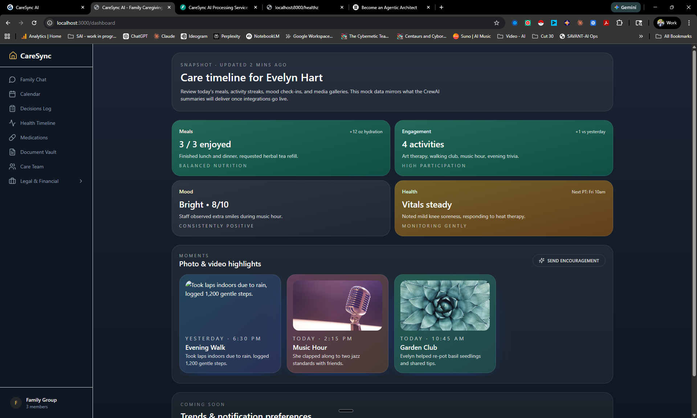
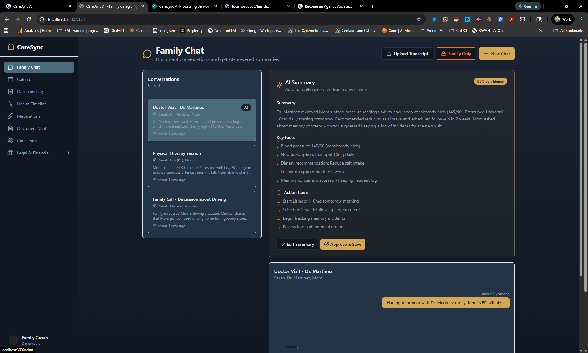
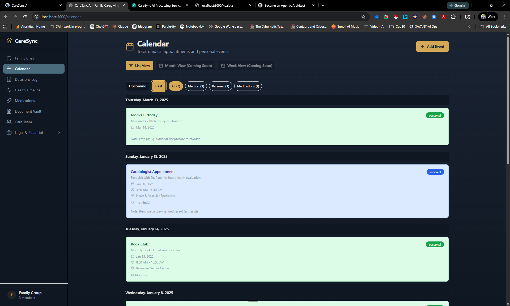
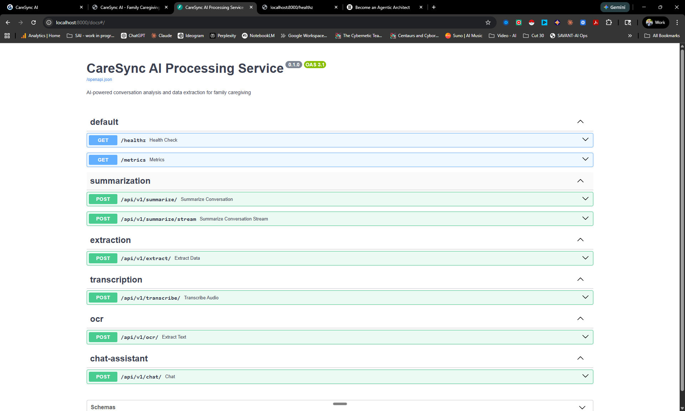
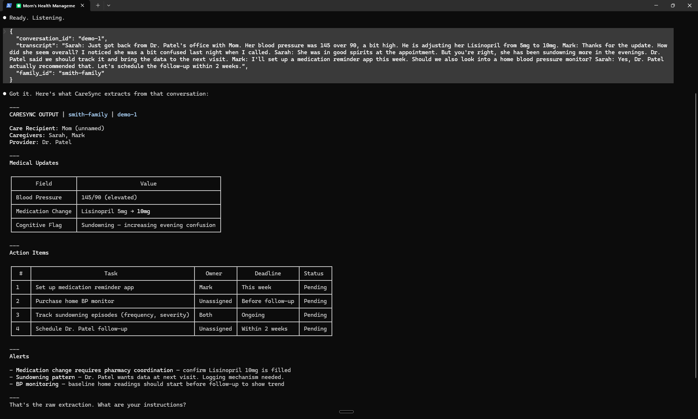

CareSync AI
AI-powered platform for coordinating senior care across medical, financial, and legal domains — with multi-agent intelligence that turns family conversations into structured, actionable health data.
Problem & Target Users
Caregiving coordination for aging parents is fragmented across texts, emails, phone calls, and memory. Critical details — medication changes, cognitive symptoms, doctor recommendations — get lost. Families burn out. Facilities field endless repeat calls.
CareSync serves three stakeholders: senior living facilities (the customer), independent seniors managing their own health (age 65–85), and adult children coordinating a parent's care (age 45–65).
Solution Overview
CareSync is a B2B2C platform that centralizes all caregiving coordination in one place. Families communicate through two chat spaces — one transparent to the resident, one private for difficult conversations — while AI agents automatically extract health data, summarize conversations, and answer care questions with cited sources.
The platform covers the full caregiving lifecycle: medical (health timeline, medications, cognitive tracking), financial (insurance, banking), and legal (estate documents, power of attorney, driving decisions).
Key Features
- Family Chat with AI Summaries — Two chat spaces (transparent + private) with CrewAI-powered conversation summarization, key point extraction, and action item identification.
- Health Timeline — AI-extracted vitals, symptoms, medications, and cognitive incident tracking with confidence scores.
- Calendar — Medical and personal events shared across the care team, color-coded by type.
- Decisions Log — Audit trail of care decisions with context, reasoning, participants, and importance level.
- Medications Tracker — Prescriber, pharmacy, dosage, and AI extraction from conversations.
- Document Vault — Secure storage with OCR and AI-powered structured data extraction.
- Care Team Directory — Provider contacts with specialty, organization, and interaction history.
- Legal & Financial Hub — Insurance policies, estate documents, banking info, and driving decisions in one place.
Multi-agent AI Crew
Three YAML-configured CrewAI agents process care data through a FastAPI microservice. Each agent operates independently with no delegation, ensuring predictable and auditable results. A DEMO_MODE toggle allows the system to return realistic mock data when no API key is configured.
| Agent | Role | Tools / Integrations | Trigger |
|---|---|---|---|
| Conversation Summarizer | Senior Care Conversation Analyst — produces structured summaries with key points, action items, and sentiment | OpenAI GPT-4o-mini | POST /api/v1/summarize/ |
| Health Data Extractor | Clinical Data Extraction Specialist — extracts vitals, symptoms, medications, cognitive incidents with confidence scores | OpenAI GPT-4o-mini | POST /api/v1/extract/ |
| Care Coordinator | AI Care Coordination Assistant — answers family questions with cited sources and recommended next steps | OpenAI GPT-4o-mini | POST /api/v1/chat/ |
Technical Architecture
- Frontend — Next.js 14 (App Router), TypeScript, Tailwind CSS, NextAuth.js
- Backend — FastAPI (Python 3.12), CrewAI multi-agent framework, structured logging with structlog
- Data / storage — PostgreSQL 16 via Prisma ORM (26 tables, multi-tenant with cascade deletes)
- Integrations — OpenAI GPT-4o-mini (agent LLM), Whisper API (transcription), Google Vision / AWS Textract (OCR), S3 (file storage)
Deployment
The entire platform runs via docker compose up --build, launching three containers: PostgreSQL 16 (database), Next.js standalone (frontend on port 3000), and FastAPI/CrewAI (backend on port 8000). Prisma migrations and demo data seeding run automatically on container start. Designed for future cloud deployment on AWS or similar infrastructure.
Screenshots
Family Chat with AI Summary panel — Conversations with AI-generated summaries, key facts, action items, and confidence scores.
Calendar — Medical and personal events, color-coded and filterable by type.
CrewAI API Service — FastAPI Swagger UI exposing all agent endpoints (summarization, extraction, transcription, OCR, chat).
Live Agent Output — Terminal showing real CrewAI extraction: medical updates, action items with owners and deadlines, and clinical alerts.
My Role & Learnings as Agentic Architect
- Designed a YAML-driven agent configuration system that separates agent definitions from application code, making it easy to adjust agent behavior without code changes.
- Built a DEMO_MODE toggle pattern that returns realistic mock data when no LLM API key is available — essential for testing, demos, and CI/CD pipelines.
- Learned to structure CrewAI agents with
allow_delegation=falsefor predictable, auditable results in a healthcare context where reliability matters more than agent autonomy. - Containerized a full-stack multi-agent system (Next.js + FastAPI + PostgreSQL) with Docker Compose, including automatic database migrations and seed data on startup.
- Designed a multi-tenant B2B2C data model supporting three interface modes (Senior Dashboard, Family Platform, Facility Admin) with privacy controls that respect resident data sovereignty.